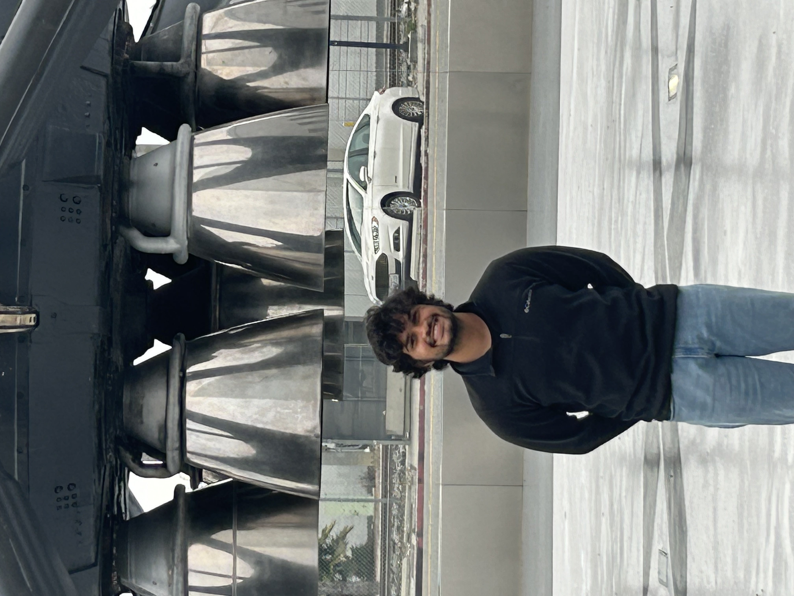

Email: sidharthshyamkumar@utexas.edu
Phone:(713)409-1075
Austin, TX 78705
The University of Texas at Austin, Bachelor of Science, Electrical and Computer Engineering, 2025
Starshield Integration and Test Engineer Intern , SpaceX, September 2023 - May 2024
BookStack, ● Java-based library system that facilitates multi-user connections via web sockets to a server ● Employed multithreading to manage data transmission from the server to individual clients concurrently ● Utilized MongoDB as the primary database with RSA encryption, ensuring data integrity and scalability
Python, Java, Bash